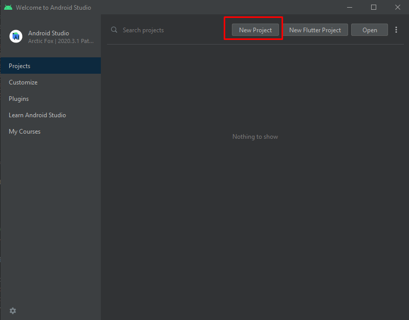

If you haven't opened a project yet, on the welcome screen, click
New project : If you have already opened a project: Go to File -> New -> New Project
Choose the template for the main Activity of the App. For this practice choose Empty Activity .
Fill the fields on the next screen. Remember in package name field to set your data, that is com.XXYYZZ.appname where XXYYZZ stands for two first letters of your name and surnames. For instance, some one named "Pedro García Marquez" should set com.pegama.appName
Minimum SDK
It is the minimum version of Android that the devices must have in order to run the app. To support as many devices as possible, it should be set to the lowest possible version. However, the lower the version, the less modern android features the app can use.
Project Structure
The created project is a basic "Hello World" application that contains some default files.
Main files and dirs in Android App
Let's have a look at the important ones:
app/src/main/AndroidManifest.xml
The manifest file describes the fundamental characteristics of the application and defines each of its components. Here we will specify the Activities that our app has and the permissions it requires (Camera, Contacts, Internet, etc.)
Contains the class definition for the mainActivity (screen). In this file we will program the behavior of this Activity.
app/src/main/res/layout/activity_main.xml
This XML file defines the layout of the activity, that is, the elements (widgets) that belong to the screen. By default,
it contains a TextView element with the text Hello world! .
app/build.gradle
Android Studio uses Gradle to compile and build the application.
There is a build.gradle file for each module in the project, as well there is a build.gradle
file for the entire project. Usually we will only be interested in the build.gradle (module: app) file.
That's where the app's build dependencies are, including the defaultConfig settings:
compiledSdkVersion is the version of the platform with which you are going to compile the application.
By default, it is set to the latest version of the SDK installed on the computer.
applicationId is the fully qualified package name for the application, which was specified in the New Project wizard.
minSdkVersion is the minimum SDK version specified during the New Project wizard. It is the oldest version of the Android SDK that the application supports.
targetSdkVersion indicates the highest version of Android that the application has been tested against.
Later we will use the build.gradle (module: app) file to install new libraries and components for our App,
in the dependencies section.
/res
This folder contains resources for the App
drawable/
Images directory
layout/
Directory for files that define the application's user interface, such as activity_main.xml , which describes a basic layout for the MainActivity
mipmap/
Contains app launcher icons
values/
Directory for other XML files that contain a collection of resources.
The colors of the app are defined in the colors.xml file.
In the strings.xml file, all the texts that are displayed in our app are defined.
The styles.xml file defines the theme of our app.
Editing Layout
In the XML files in the res/layout folder, the layout of the widgets of the screens is defined.
At the moment, in the activity_main.xml screen there is only one TextView that shows the text Hello world.
To edit the layout files there are two ways:
Graphic mode : allows you to drag the widgets from the palette to the screen, and modify their attributes.
Code mode : allows you to directly modify the XML code.
Usually, we will work in code mode:
Double click on the file res/layout/activity_main.xml
Click on the icon (or also Split ...)
Next we are going to modify the layout as follows:
The TextView that currently contains the Hello World text, we will use it to display the counter
We will add a button that, when pressed, will increase the counter
TextView
To change the text that is displayed in a TextView , you must modify the android: text attribute.
Change the value of this attribute to text You have clicked 0 times
android:text="Has clicado 0 veces"
Modifing TextView from Layout
Button
Also add the Button that, when pressed, will increase the counter :
The layout_width and layout_height attributes specify the
width and height of the element.
The value wrap_content indicates that the width / height must be adapted to the content of the element.
In the case of the Button and the TextView , they must fit to the text that they contain.
The value "match_parent " indicates that the width / height must be the same as the parent element.
You can also set a fixed size width / height in pixels or others units.
Constraint Layout
In the current design of the layout we can see that the button layout is not the most appropriate:
Bad design
Maybe it would be better if the button was arranged below the TextView ...
To arrange the elements in a ConstraintLayout , you have to define constraints in each element.
We can imagine constraints as springs that pull an element in all four directions
(up, down, left, and right). The element is positioned in equilibrium between the forces
of the springs that have been defined.
TextView
In the case of the TextView we see that there are already
four constraints defined:
In each constraint it is indicated where the "spring" should pull. We can see that:
The constraintBottom pulls the TextView to the bottom (toBottomOf ) of its parent
(The parent element of the TextView is the ConstraintLayout).
The constraintLeft pulls the TextView to the left (toLeftOf ) of its parent .
The constraintRight pulls the TextView to the right (toRightOf ) of its parent .
The constraintTop pulls the TextView to the top (toTopOf ) of its parent .
As we can see, the TextView is in vertical balance between the Top and Bottom constraints, and horizontal between Left and Right,
and in this way it remains centered within the ConstraintLayout .
Button
Now, we're going to define Button constraints to arrange it on this way
Button constraint
The button's constraintBottom will pull it towards the bottom of its parent (the ConstraintLayout).
The constraintLeft to the left of its parent.
The constraintRight towards the right side of its parent.
So far the thing is simple. It is enough to define the constraints as in the TextView . These constraints all point to the parent element:
Constraints
In the constraintTop things change ...
Notice in the image above that the constraintTop pulls the button to the bottom of the TextView.
To refer to the parent element we have seen that we can use parent.
But how do we reference the TextView? To do this, you have to assign an identifier to the TextView.
To assign an identifier to an element, you must use the android: id attribute, and in the value you must put @+id/
before the identifier that we want to assign to it.
So, to assign the ClickCounter identifier to the TextView , we will add this attribute:
android:id="@+id/clicksCounter"
Now we can add the constraintTop to the button and make it pull it towards the bottom (toBottomOf ) of the TextView:
If you launch the app, you will see the text and the button.
However, when you click the button, nothing happens. The behavior of this button has not been defined.
To add a behavior to the button we must do it in the Kotlin code (or also Java). We will write the code in the MainActivity.kt file
MainActivity.kt
The MainActivity class is defined in this file, and in it the onCreate() method.
This onCreate() method is the one that the Android System executes first when our App starts.
In this method the first thing you should look at is the call setContentView(R.layout.activity_main) .
This call establishes the layout activity_main.xml, that is, what will be shown on the screen is what we have put in this layout file
(the TextView and the Button ).
Once we have seen this, let's go to the necessary code for our counter. We will need:
An int variable that stores the counter
Program the Button to increase the counter and updates the TextView each time it is clicked
Creating the variable to store the number of clicks is the simplest part:
MainActivity.kt
class MainActivity : AppCompatActivity() {
var counter = 0 //creates a inits counter variable
override fun onCreate(savedInstanceState: Bundle?) {
super.onCreate(savedInstanceState)
setContentView(R.layout.activity_main)
}
}
findViewById
To program the behavior of the Button , and then update the text of the TextView ,
we will need to have a reference to these two elements.
To do this, we will define a variable for each element and call the findViewById()
method to link these variables with the corresponding layout elements. The findViewById() method must be passed the
identifier that we have defined in the XML file.
MainActivity.kt
class MainActivity : AppCompatActivity() {
var counter = 0
val tvClickCounter: TextView by lazy { findViewById(R.id.clicksCounter) }
//var tvClickCounter: TextView? = null
lateinit var btnIncreaseCounter: Button
override fun onCreate(savedInstanceState: Bundle?) {
super.onCreate(savedInstanceState)
setContentView(R.layout.activity_main)
btnIncreaseCounter = findViewById(R.id.increaseCounter) as Button
//tvClickCounter = findViewById(R.id.increaseCounter) as TextView
}
notice comment declaration
Notice that the calls to findViewById() were made after setting the activity_main.xml layout.
The findViewById() method will look for the elements in this file.
ViewBinding
Optionally, the ViewBinding can be activated to avoid having to make calls to findViewById()
to bind the elements of the XML with the Kotlin variables.
Imagine that instead of 1 button and 1 textview, we have 10 buttons and 5 textviews ... that's 15 variables and 15 calls to findViewById!!
To activate the ViewBinding , go to the build.gradle (Module: app) file and add the following configuration:
Then, you have to define a single variable and from this we can access the XML elements. You also have to modify the call to setContentView() , as follows:
MainActivity.kt
class MainActivity : AppCompatActivity() {
var counter = 0
private lateinit var binding: ActivityMainBinding
override fun onCreate(savedInstanceState: Bundle?) {
super.onCreate(savedInstanceState)
binding = ActivityMainBinding.inflate(layoutInflater)
val view = binding.root
setContentView(view)
}
}
In this way, to access the Button and the TextView (or other elements that we had) we can do it directly through the binding
variable and the identifier of the elements, like this:
binding.clicksCounter
binding.increaseCounter
If you want a layout file to be ignored while generating binding classes, add there tools: viewBindingIgnore = "true"
attribute to the root view of that file:
Once we have linked the Button and the TextView , the next step is to program the action for the
button so that it responds to the CLICK (increasing the counter and displaying the text in the TextView ).
For the button to respond to the CLICK event, call the setOnClickListener()
method and pass it a View.OnClickListener class object. In the onClick() method of this object we will
program what we want to do when the button is pressed:
MainActivity.kt
class MainActivity : AppCompatActivity() {
var counter = 0
private lateinit var binding: ActivityMainBinding
override fun onCreate(savedInstanceState: Bundle?) {
super.onCreate(savedInstanceState)
binding = ActivityMainBinding.inflate(layoutInflater)
val view = binding.root
setContentView(view)
binding.increaseCounter.setOnClickListener(){
//TODO: Increase counter var
//TODO: Set counter val into TextView (clicksCounter)
}
}
}
If you haven't used ViewBinding , remember to declare increaseCounter variable.
Finally, the application code looks like this:
MainActivity.kt
class MainActivity : AppCompatActivity() {
var counter = 0
private lateinit var binding: ActivityMainBinding
override fun onCreate(savedInstanceState: Bundle?) {
super.onCreate(savedInstanceState)
binding = ActivityMainBinding.inflate(layoutInflater)
val view = binding.root
setContentView(view)
binding.increaseCounter.setOnClickListener(){
counter++;
binding.clicksCounter.setText("You have clicked $counter times")
}
}
}
If you haven't use ViewBinding, the resulting code looks more or less like this:MainActivity.kt
class MainActivity : AppCompatActivity() {
var counter = 0
private val tvClicksCounter:TextView by lazy { findViewById(R.id.clicksCounter) }
private val btnIncreaseCounter:TextView by lazy { findViewById(R.id.increaseCounter) }
override fun onCreate(savedInstanceState: Bundle?) {
super.onCreate(savedInstanceState)
setContentView(R.layout.activity_main)
btnIncreaseCounter.setOnClickListener(){
counter++;
tvClicksCounter.setText("You have clicked $counter times")
}
}
}

 (or also Split ...)
(or also Split ...)